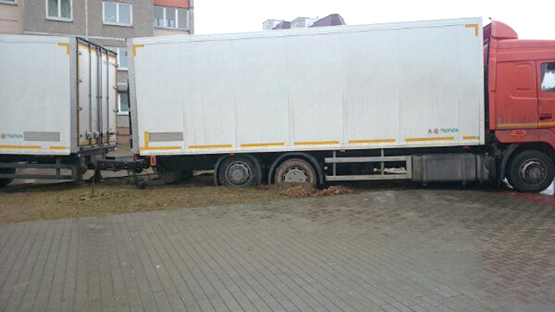
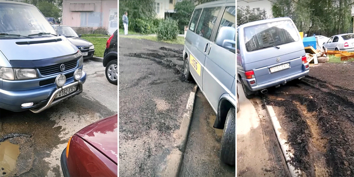

газон — участок земли с естественным или искусственно созданным растительным, преимущественно травяным, покровом;
Точнее было бы сказать: участок земли, предназначенный для естественного или искусственного
растительного (преимущественно травяного) покрова.
Т.к. фактически на данном участке земли растительного покрова может уже не быть, его могут создавать
или восстанавливать.
И если на общественный газон автомобилям в общем случае заезжать нельзя, то на собственной даче - можно.

Водитель грузового автомобиля повредил газон.
Фото с сайта onliner.by.

Водитель такси испортил восстановленный газон (впоследствии привлечен к административной
ответственности).
Фото с сайта onliner.by.